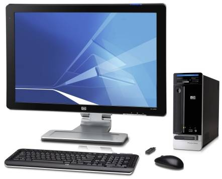
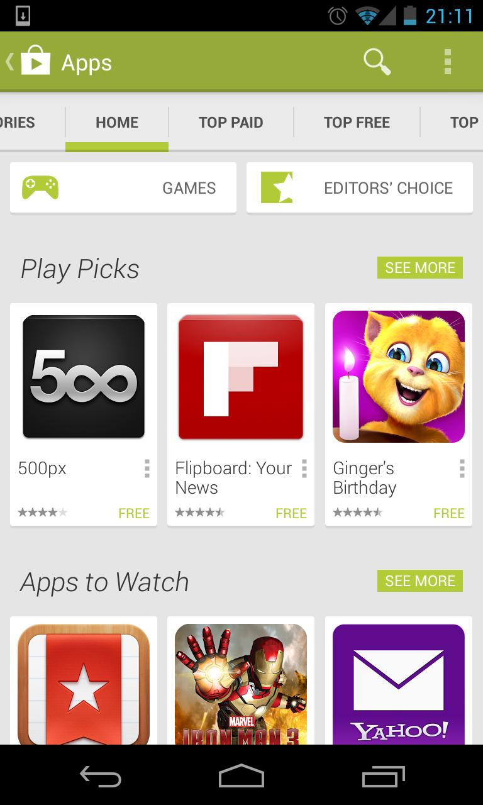
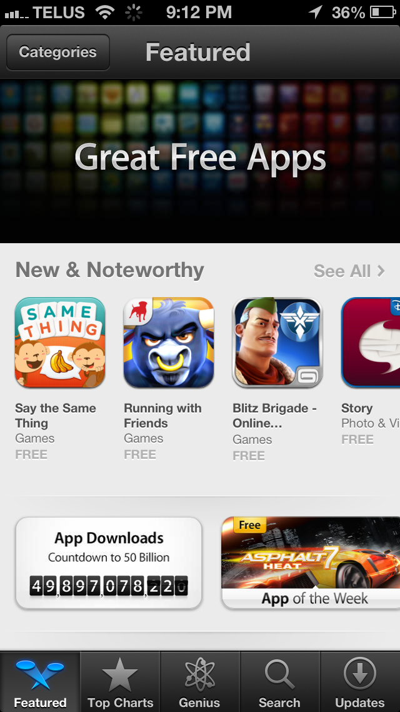
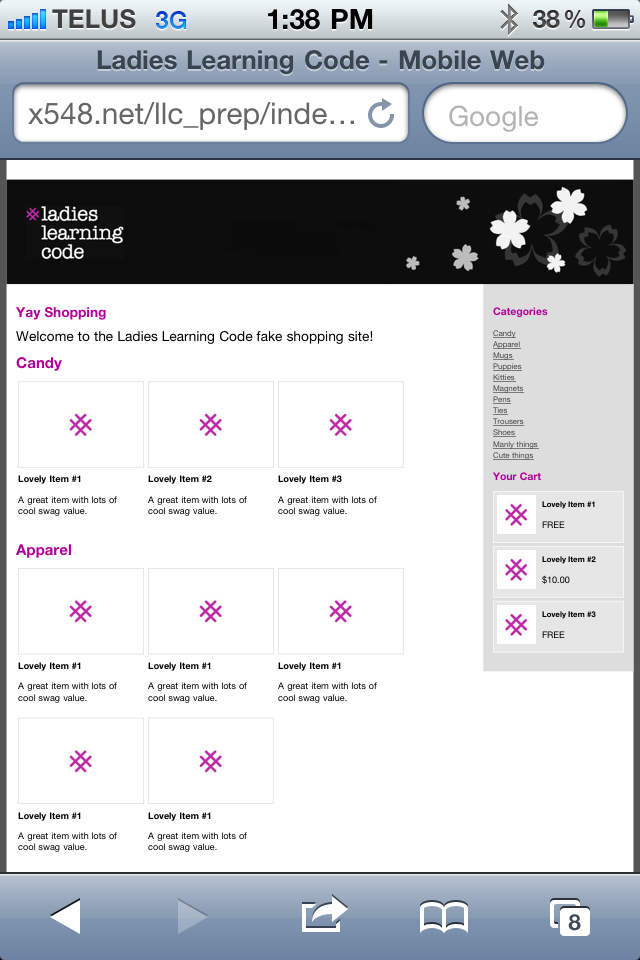
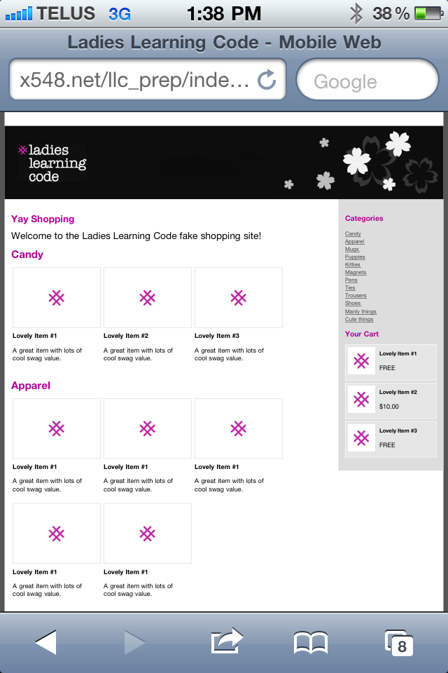
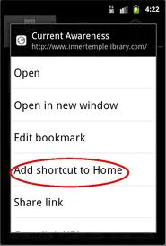
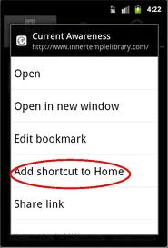
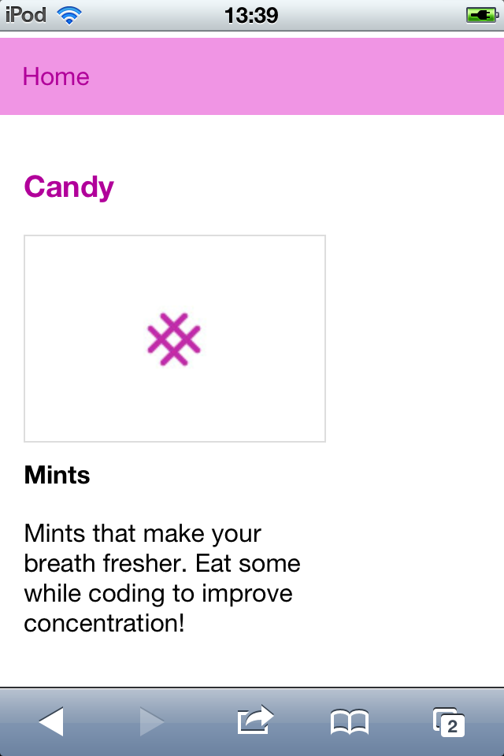

Desktop vs. Mobile
 v.s. 
- Appareil - comment vous l'utilisez, ses capacités
- Temps - le temps que vous avez
- Bur - ce que vous désirez accomplir
- Lieu - où vous l'utilisez
- Attitude - votre état d'esprit
Apps natives - Réseaux de ditributions
On se procure les applications sur des réseaux de distribution ("app store") spécifiques.
 
Jetons un oeil à notre site !
 

Rendons-le accessible
Rendons notre site accessible à partir de l'écran d'accueil
iOS (iPod touch et iPhones)
- Appuyez sur l'icône au centre de la barre du bas
- Selectionnez 'Add to Home Screen'

Ex #2 continuons - anciens Androids
- Appuyez sur le bouton menu de l'appareil et sélectionnez "Ajoutez aux favoris"
- Appuyez sur le bouton menu de l'appareil et sélectionnez "Favoris"
- Appuyez et retenez le "Favoris" et sélectionnez "Ajoutez un raccourci à l'accueil"

 

Pour les plus récents Androids: ajoutez un widget de favoris
Ex #2 suite - BlackBerry
- Cliquez sur le bouton menu du BlackBerry.
- Cliquez sur "Add to Home Screen"

C'est magique!

Essayez ceci: www.smashingmagazine.com
Comment appliquer cette théorie à mon site web?
Génial! maintenant que nous savons comment utiliser un Media Queries, comment appliquer cette théorie à son site web?
 vs
vs 
Note #1 sur le design pour les mobiles
l'espace limité de l'écran rend impossible l'affichage d'un site fait pour desktop!
VS
Se concentrer sur quoi?

- Quels sont les éléments les plus importants à l'écran?
- Que voulez-vous que vos usagers voient?
- Comment utiliseront-ils votre site web?
C'est quoi déjà le CSS?

HTML (Structure) vs CSS (Style)?
 vs
vs 
Nous utilisons index.html pour la structure du site mobile et mobile.css/desktop.css pour son style.
Plus de CSS - les Floats
Les Floats permettent de changer la position normale d'un élément HTML vers le haut, le bas, la gauche ou la droite.

Ils sont utile pour créer des colonnes comme dans notre site en version desktop.
Plus de CSS - le positionnement (Display)
Certains éléments HTML s'alignent naturellement à l'horizontale (inline). Les éléments inline ne supportent généralement pas les propriétés de hauteur, largeur et rembourrage (padding). Les éléments de type block, eux, auront tendance à prendre le plus d'espace possible en largeur.

Display: inline-block;
Vous pouvez combiner les 2 comportements. Ici les
"Zoom to Fit" vs "Zoom to Actual Size"
Zoom to fit screen:Le contenu est ajusté (à 50%), c'est une vue d'oiseau pour voir l'ensemble du contenu.
Zoom to actual size: On voit le contenu à sa taille réelle (100%)
On doit spécifier le comportement voulu au navigateur.
 vs
vs 
Trop de Scrolling!
Ça prend tellement d'effort pour faire tout dérouler vers le bas !
Les usagers d'appareils mobiles sont habitués de devoir scroller, mais ne leur faites pas défiler mille éléments de menu avant de leur permettre d'accéder au contenu.

Récapitulons

Créer des Catégories
Créons des catégories de pages

Créez Candies and Apparels
Créez la page Candies and Apparels
